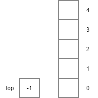
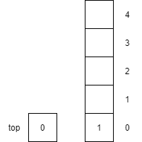
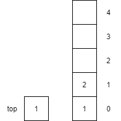
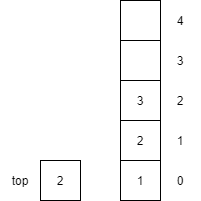

Using Operations
The following table shows an example of how to use the above operations to create and manipulate a stack. It assumes the steps are performed sequentially and the result of the operation is shown.
| Step | Operation | Effect |
|---|---|---|
| 1 | Constructor | Creates an empty stack.  |
| 2 | isFull() |
Returns false since top is not equal to the capacity of the stack.
|
| 3 | isEmpty() |
Returns true since top is equal to -1
|
| 4 | push(1) |
Increments top by 1 and then places item $1$ onto the top of the stack

|
| 5 | push(2) |
Increments top by 1 and then places item $2$ onto the top of the stack

|
| 6 | push(3) |
Increments top by 1 and then places item $3$ onto the top of the stack

|
| 7 | peek() |
Returns the item $3$ on the top of the stack but does not remove the item from the stack. top is unaffected by peek
|
| 8 | pop() |
Returns the item $3$ from the top of the stack and removes the item from the stack. top is decremented by 1.
|
| 9 | pop() |
Returns the item $2$ from the top of the stack and removes the item from the stack. top is decremented by 1.
|
| 10 | pop() |
Returns the item $1$ from the top of the stack and removes the item from the stack. top is decremented by 1.
|
| 11 | isEmpty() |
Returns true since top is equal to -1
|